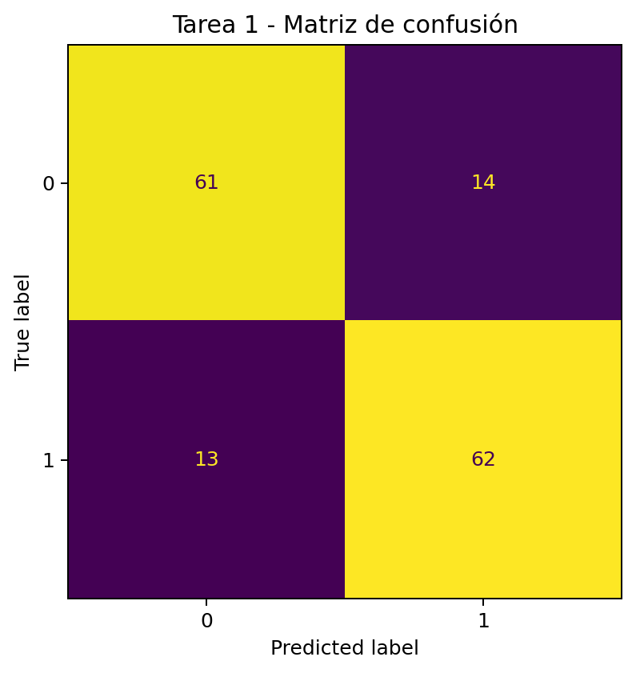
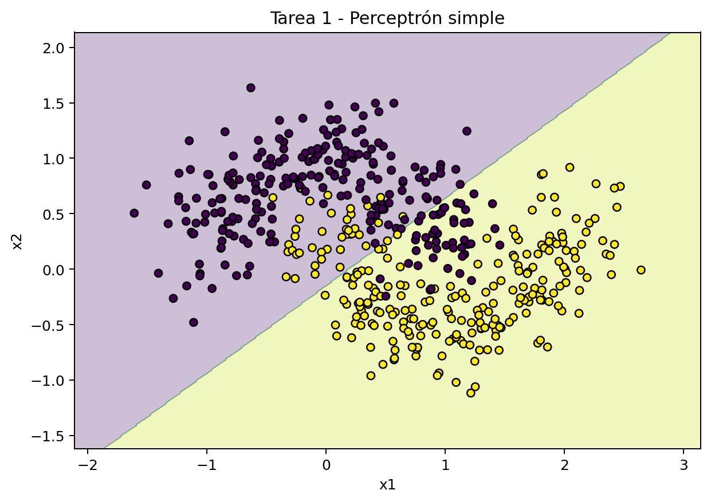
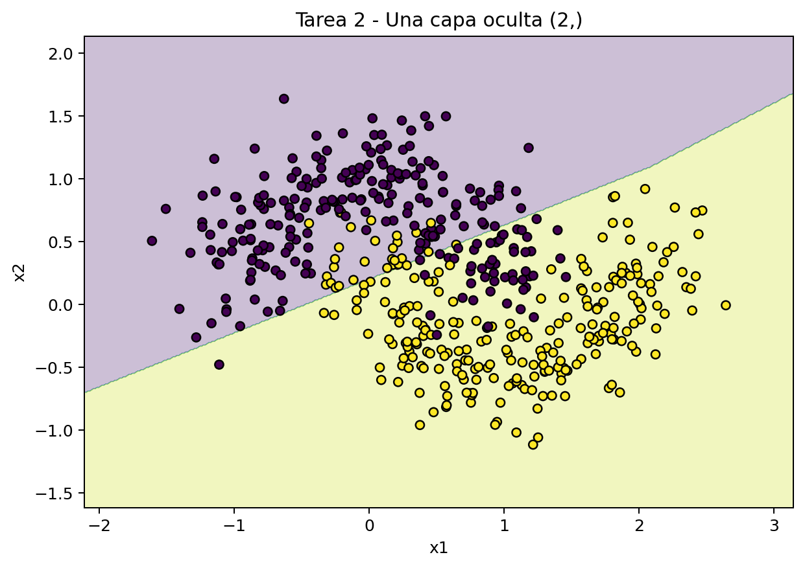
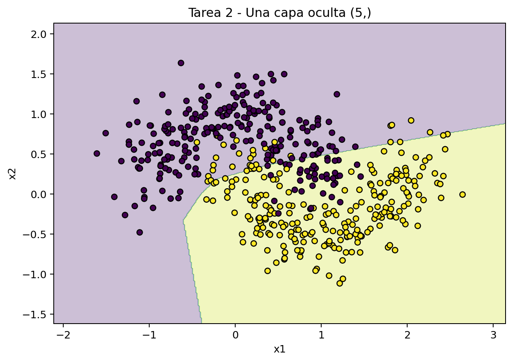
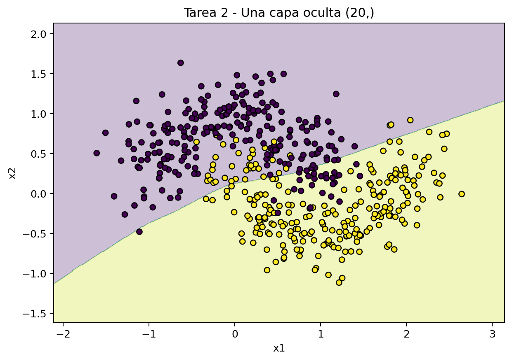
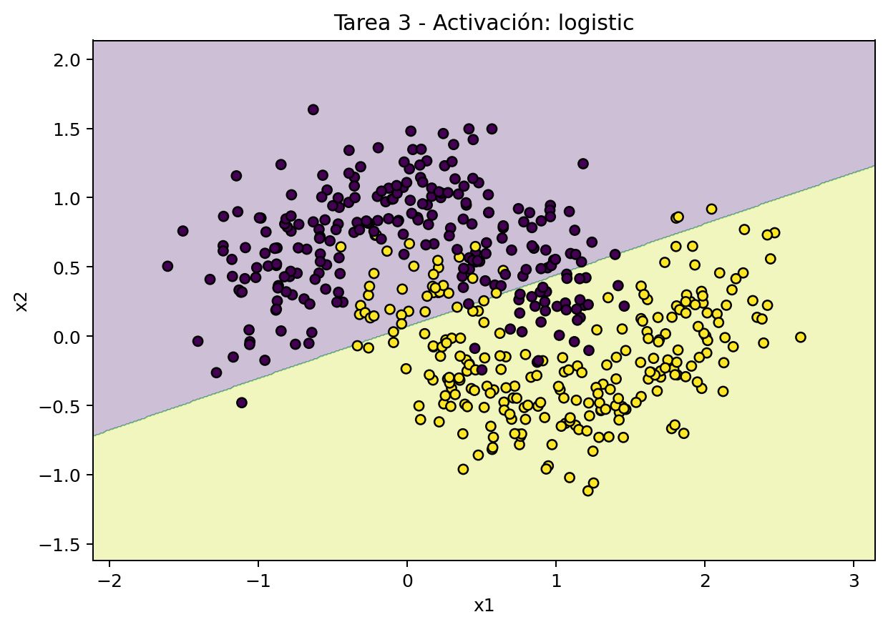
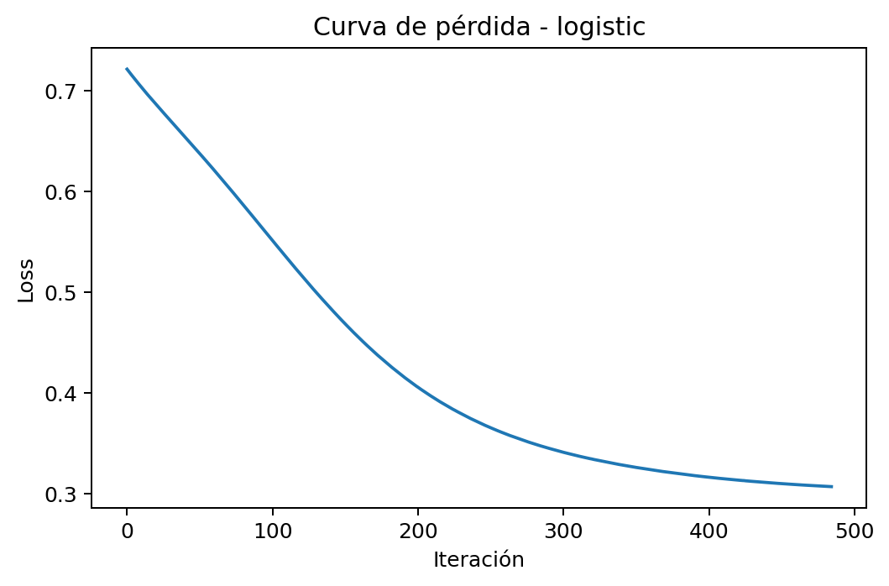
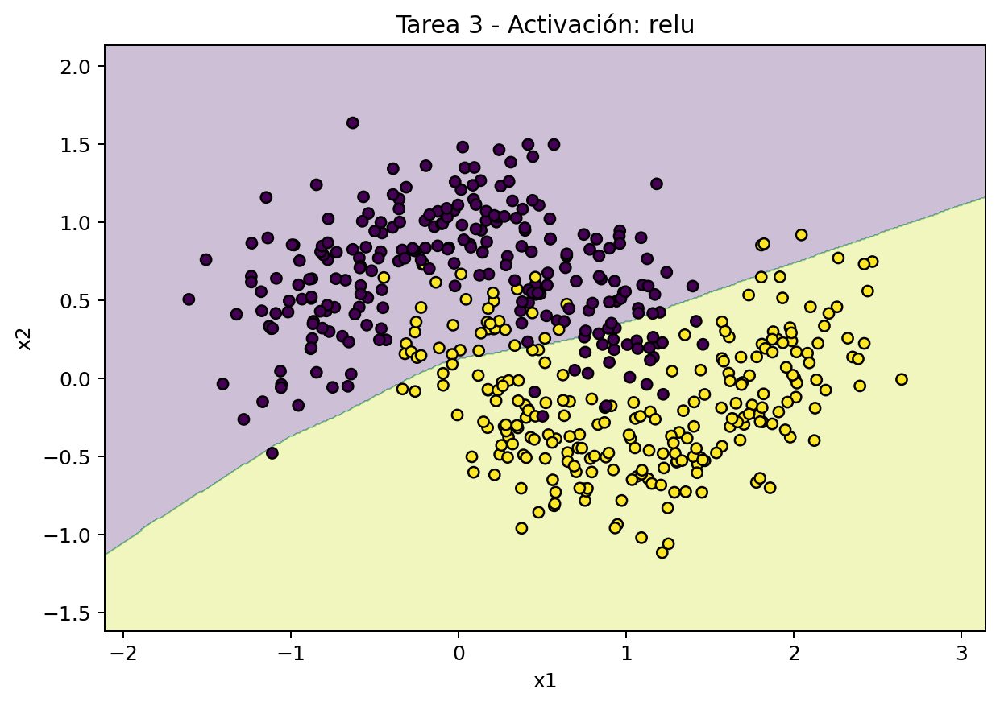
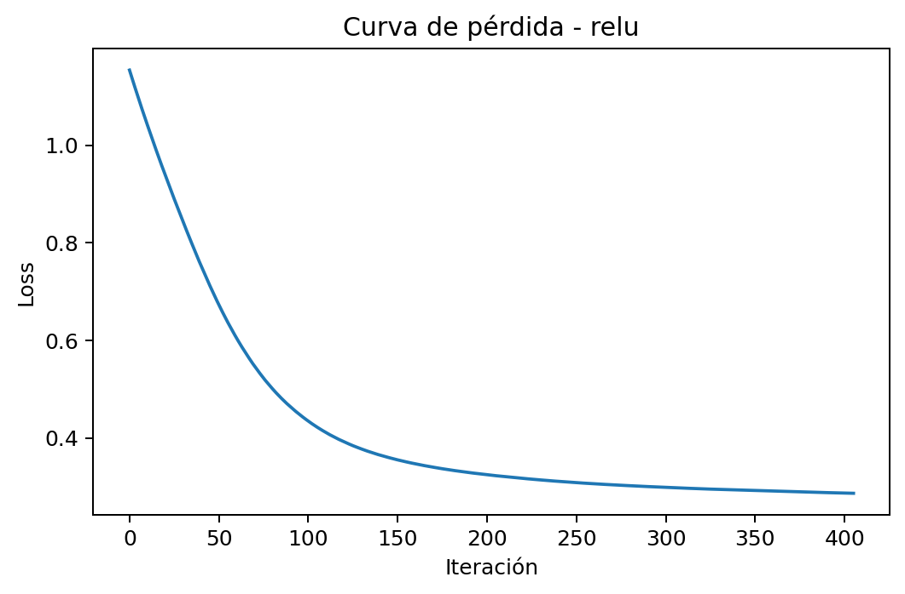

Al pulsar, elige destino: Guardar como PDF.
Comprender cómo la arquitectura de una red neuronal afecta a su capacidad de representación y generalización. En particular, se estudiará por qué un modelo lineal falla en problemas no lineales, cómo influye el número de neuronas y capas ocultas en la frontera de decisión, y qué papel juegan las funciones de activación en el aprendizaje de un Perceptrón Multicapa.
make_moons.load_digits).scikit-learn.Nota: el trabajo consiste en analizar resultados experimentales, no en implementar una red neuronal desde cero.
En prácticas anteriores se ha trabajado con modelos lineales o con clasificadores cuya capacidad de decisión era relativamente limitada. Sin embargo, muchos problemas reales presentan fronteras entre clases que no pueden representarse mediante una línea recta o un hiperplano simple.
Las redes neuronales permiten superar esta limitación mediante la combinación de capas y funciones de activación no lineales. Gracias a ello, un Perceptrón Multicapa (MLP) puede aprender regiones de decisión más complejas y adaptarse a problemas donde los modelos lineales fracasan.
Pero esta mayor flexibilidad también introduce nuevas preguntas de ingeniería:
En esta práctica se va a explorar estas cuestiones de forma experimental, observando cómo cambia el comportamiento del modelo al modificar su arquitectura.
En esta parte se usa un perceptrón simple, es decir, un MLP sin capas ocultas. El resultado en
make_moons es limitado porque el modelo solo puede aprender una frontera lineal.
¿Por qué falla un modelo sin capas ocultas en este problema?
Falla porque un perceptrón simple solo puede aprender fronteras de decisión lineales, mientras que make_moons tiene una distribución no lineal. Como no puede adaptarse a la forma curva de los datos, el modelo no puede separar bien las clases y tiene una cantidad considerable de errores.
¿Qué relación hay entre la geometría de los datos, la frontera de decisión y la capacidad expresiva del modelo?
La geometría de los datos determina como de compleja es la frontera que separa las clases. Si los datos no son linealmente separables, se tiene que usar una frontera no lineal. La capacidad expresiva del modelo es la que define el tipo de fronteras que puede aprender el modelo. En este caso, el modelo solo puede representar fronteras lineales, por lo que no puede ajustarse a la estructura real de los datos, lo que provoca que haya underfitting.
Matriz de confusión:

Frontera de decisión:

Se comparan tres configuraciones con una sola capa oculta: 2, 5 y 20 neuronas. La idea es observar cómo crece la flexibilidad del modelo y si esa flexibilidad mejora realmente la generalización.
¿Qué ocurre al aumentar el número de neuronas en una sola capa oculta?
Al aumentar el número de neuronas en una sola capa oculta, el modelo gana capacidad para
aprender fronteras de decisión más complejas. Con pocas neuronas, la red suele quedarse corta (underfitting)
y no captura bien la forma no lineal de los datos; al añadir neuronas, normalmente mejora la accuracy y la
frontera se ajusta mejor.
Sin embargo, más neuronas no siempre implica mejor generalización: si se
incrementan en exceso, aumenta la complejidad del modelo y puede aparecer sobreajuste o mejoras marginales
que no compensan el coste. La idea clave es buscar un punto intermedio: suficientes neuronas para
representar el problema, pero sin sobredimensionar la red.
¿Cómo cambia la frontera de decisión al aumentar el número de neuronas ocultas?
Al aumentar el número de neuronas ocultas, la frontera de decisión pasa de ser más simple y
rígida a ser más flexible y detallada.
Con pocas neuronas, la frontera suele ser demasiado "suave" y
no captura bien la curvatura de los datos (underfitting). Al añadir neuronas, aparecen más regiones de
separación y el modelo se adapta mejor al patrón no lineal, mejorando normalmente el rendimiento en test. Si
se añaden demasiadas, la frontera puede volverse innecesariamente compleja e irregular, ajustándose al ruido
y perdiendo capacidad de generalización (overfitting).
¿Hay underfitting u overfitting en estas configuraciones?
En estas configuraciones se observa principalmente underfitting en las redes pequeñas y una
reducción de ese problema al aumentar neuronas:
• Con 1 capa y 2 neuronas hay underfitting claro: la frontera es demasiado simple y no captura bien la
curvatura de los datos.
• Con 1 capa y 5 neuronas el ajuste mejora, pero todavía puede haber cierto
underfitting (la frontera sigue siendo algo limitada).
• Con 1 capa y 20 neuronas el modelo representa
mejor la no linealidad y el underfitting disminuye notablemente.
| Modelo | Arquitectura | acc_train | acc_test | Iteraciones |
|---|---|---|---|---|
| MLP 1 capa (2) | 1 capa (2 neuronas) | 0.8429 | 0.8200 | 648 |
| MLP 1 capa (5) | 1 capa (5 neuronas) | 0.8686 | 0.8400 | 726 |
| MLP 1 capa (20) | 1 capa (20 neuronas) | 0.8600 | 0.8533 | 406 |
Frontera de decisión con 2 neuronas:

Frontera de decisión con 5 neuronas:

Frontera de decisión con 20 neuronas:

En esta parte se estudiará cómo influye la función de activación de las capas ocultas. Se elegirá una arquitectura fija y se entrenará dos veces: una con Sigmoide y otra con ReLU. Luego se compararán ambos modelos en términos de evolución del entrenamiento, iteraciones necesarias, rendimiento final y aspecto de la frontera de decisión.
¿Cuál de las dos funciones converge más rápido y qué diferencias se observan?
La función de activación ReLU converge más rápido que la función logística, ya que necesita
menos iteraciones para alcanzar un valor de pérdida bajo (406 frente a 485 iteraciones).
Además, ReLU
obtiene un mejor rendimiento final, con mayor accuracy en test (0.8533 frente a 0.8400) y menor valor de
pérdida final (0.2870 frente a 0.3071).
En las curvas de pérdida se puede ver que:
• Con logistic,
la disminución de la pérdida es progresiva y lenta.
• Con ReLU, la pérdida cae rápidamente en las
primeras iteraciones y converge antes.
En cuanto a la frontera de decisión, ambas son similares en
forma general, pero ReLU produce una separación ligeramente más ajustada a los datos y Logistic genera una
frontera algo más suave, con mayor solapamiento en algunas zonas.
En resumen, ReLU tiene un
comportamiento más eficiente en velocidad de convergencia y en calidad del resultado final.
¿Por qué puede ocurrir lo observado?
La función logística no funciona correctamente cuando los valores de entrada son muy altos o muy
bajos, lo que provoca gradientes muy cerca de cero. Esto provoca que el aprendizaje sea lento, ya que los
pesos se actualizan muy poco en esas zonas.
En cambio, ReLU no se satura para valores positivos y
mantiene gradientes constantes, lo que hace que el entrenamiento sea más eficiente.
ReLU permite una
optimización más rápida y estable, reduce el problema del gradiente desvanecido y facilita que el modelo
aprenda mejores representaciones en menos iteraciones.
Esto explica por qué, en este experimento,
ReLU converge antes y por qué alcanza un mejor rendimiento final.
| Activación | acc_test | Iteraciones | loss_final |
|---|---|---|---|
| logistic | 0.8400 | 485 | 0.3071 |
| relu | 0.8533 | 406 | 0.2870 |
Frontera con logistic:

Pérdida con logistic:

Frontera con ReLU:

Pérdida con ReLU:

Se trabajará con un problema más realista: clasificación de dígitos escritos a mano. Se cargará el dataset de dígitos y se diseñarán distintas arquitecturas MLP variando el número de capas ocultas y neuronas por capa, buscando una configuración que alcance al menos un 95% de acierto.
No se trata de probar combinaciones al azar: se justificará el proceso seguido, se explicará qué arquitecturas se probaron, cuáles funcionaron mejor o peor, y cuál se considera la configuración mínima razonable.
¿Qué arquitectura alcanza al menos un 95% de acierto? Justifica el proceso experimental seguido.
La arquitectura mínima razonable que alcanzó al menos un 95% de acierto fue una MLP de 1 capa
oculta con 10 neuronas, con acc_test = 0.9578 (en la exploración ampliada). El proceso seguido fue
incremental y justificado: primero se probaron arquitecturas base de 1 capa (20, 50 y 100 neuronas) y de 2
capas (30-15, 50-20 y 64-32), y después se amplió con configuraciones más pequeñas para identificar el
umbral mínimo que cumplía el objetivo.
En conjunto:
• Funcionaron mejor en accuracy arquitecturas
más grandes como una capa de 100 neuronas (aprox. 0.98), pero con mayor complejidad.
• Varias
configuraciones cumplieron el 95% (una capa de 20, 50 o 100 neuronas; dos capas 30-15, etc.).
• Algunas
configuraciones desbalanceadas rindieron peor (por ejemplo, dos capas 20-50 quedaron por debajo del
95%).
Por tanto, si el criterio principal es cumplir 95% con la menor complejidad posible, la
elección recomendada es 1 capa con 10 neuronas; si se prioriza un margen extra de rendimiento/estabilidad,
una opción equilibrada es 1 capa con 20 neuronas.
¿Es preferible una sola capa con muchas neuronas o dos capas con menos neuronas cada una?
En este caso es preferible una sola capa con suficientes neuronas.
Con los resultados de
la práctica, una red de una sola capa ya supera el 95% en test y lo hace con una estructura más simple, más
fácil de justificar y de ajustar. Las arquitecturas de dos capas también funcionan, pero no aportan una
mejora clara y consistente que compense el aumento de complejidad.
¿Qué compromiso existe entre simplicidad, capacidad de representación, dificultad de entrenamiento, interpretabilidad y rendimiento?
El compromiso es que, al simplificar la arquitectura, se gana en interpretabilidad, estabilidad y coste de entrenamiento, pero se puede perder capacidad para modelar patrones complejos. Si se aumenta mucho la complejidad (más capas o más neuronas), la red suele representar mejor la estructura de los datos y puede subir el rendimiento, aunque a costa de mayor tiempo de ajuste, más sensibilidad a hiperparámetros y más riesgo de sobreajuste. Por eso, la decisión razonable no es "la red más grande", sino la arquitectura más simple que alcance el objetivo (por ejemplo, 95% en test) con una brecha entrenamiento-prueba controlada y un comportamiento estable entre ejecuciones.
Se recomienda una MLP de 1 capa oculta con 20 neuronas como opción final de diseño. Aunque la arquitectura de 1 capa con 10 neuronas ya supera el umbral del 95% en prueba, la configuración con 20 neuronas ofrece un margen adicional de rendimiento y estabilidad sin incrementar demasiado la complejidad del modelo.
La elección se justifica por el equilibrio entre:
En resumen, se prioriza la arquitectura más simple que cumple holgadamente el objetivo, evitando aumentar capas o neuronas sin una mejora proporcional en generalización.
| Modelo | Arquitectura | acc_train | acc_test | Iteraciones | Cumple 95% |
|---|---|---|---|---|---|
| MLP 1 capa (20) | 1 capa (20 neuronas) | 0.9993 | 0.9644 | 169 | sí |
| MLP 1 capa (50) | 1 capa (50 neuronas) | 1.0000 | 0.9711 | 180 | sí |
| MLP 1 capa (100) | 1 capa (100 neuronas) | 1.0000 | 0.9800 | 147 | sí |
| MLP 2 capas (30-15) | 2 capas (30 y 15 neuronas) | 1.0000 | 0.9600 | 161 | sí |
Imagina que formas parte de un equipo técnico que necesita desplegar un clasificador basado en redes neuronales para un problema real. Debes redactar una breve propuesta respondiendo a las preguntas. Se valorará especialmente la capacidad de conectar los resultados experimentales con una decisión de diseño razonada.
¿Cuándo tiene sentido usar una red sin capas ocultas y cuándo no?
Tiene sentido usar una red sin capas ocultas cuando el problema es aproximadamente lineal, hay
poca complejidad en los datos, se busca un modelo muy simple e interpretable, o se necesita una línea base
rápida para comparar. En esos casos, un perceptrón simple puede ser suficiente y además es más fácil de
entrenar y justificar.
No tiene sentido usarla cuando la frontera entre clases es no lineal (como en
make_moons), cuando hay interacciones complejas entre variables o cuando se observa underfitting claro. En
esos escenarios, el modelo sin capas ocultas queda limitado porque solo aprende separaciones lineales, por
lo que conviene añadir al menos una capa oculta para ganar capacidad de representación y mejorar la
generalización.
¿Qué arquitectura recomendarías para un problema no lineal sencillo?
Para un problema no lineal sencillo recomendaría una MLP con 1 capa oculta y unas 20 neuronas,
usando ReLU.
Esto se debe a que:
• Tiene suficiente capacidad para modelar fronteras no lineales
sin complicar demasiado el modelo.
• Mantiene un buen equilibrio entre rendimiento, coste de
entrenamiento e interpretabilidad.
• En los resultados, esta configuración mejora claramente frente a
redes más pequeñas y evita sobredimensionar la arquitectura.
Si el objetivo fuese solo cumplir un
umbral mínimo con la menor complejidad posible, también sería razonable 1 capa con 10 neuronas.
¿Qué ventajas e inconvenientes observas al aumentar el número de neuronas?
Al aumentar el número de neuronas, las principales ventajas son una mayor capacidad de
representación y, por tanto, la posibilidad de aprender fronteras de decisión más complejas. Esto suele
reducir el underfitting y puede mejorar la accuracy, especialmente cuando el problema es claramente no
lineal.
Como inconvenientes, también aumenta la complejidad del modelo: el entrenamiento puede tardar
más, la optimización se vuelve más sensible a hiperparámetros y crece el riesgo de sobreajuste si la red
empieza a ajustarse al ruido. Además, se pierde interpretabilidad y puede haber mejoras marginales que no
compensen el coste añadido.
En resumen, no conviene "poner más neuronas por defecto", sino buscar el
mínimo tamaño de red que consiga buen rendimiento en test de forma estable.
¿Qué función de activación elegirías en un problema general de clasificación y por qué?
En un problema general de clasificación elegiría ReLU en las capas ocultas, porque suele converger más rápido, facilita la optimización con gradientes y, en la práctica, ofrece buen rendimiento con menor riesgo de saturación que la sigmoide. Ya que aunque la sigmoide puede funcionar, tiende a saturarse en valores extremos, lo que ralentiza el aprendizaje y puede requerir más iteraciones para llegar a un resultado similar. Por eso, como elección por defecto, ReLU suele ser más robusta y eficiente.
¿Qué criterio usarías para decidir si una arquitectura es suficientemente buena sin hacerla innecesariamente compleja?
El criterio que usaría para decidir si una arquitectura es suficientemente buena sin hacerla innecesariamente compleja sería escoger aquella que alcance el objetivo de rendimiento en test con el menor número posible de capas y neuronas, y que además mantenga una diferencia razonable entre entrenamiento y prueba. Es decir, primero se comprobaría si cumple el umbral mínimo exigido; después, nos quedaríamos con la arquitectura más simple que lo consiga de la forma más estable, sin aumentar la complejidad del modelo sólo por mejorar marginalmente el accuracy. En resumen, elegiría el modelo que mejor equilibre rendimiento, simplicidad y generalización.
En la práctica se ha visto como el rendimiento de una red neuronal depende mucho de cómo se diseñe. Un modelo lineal, como el perceptrón simple, no es suficiente cuando los datos no son lineales, ya que no puede adaptarse a su forma y acaba haciendo underfitting.
Al añadir capas ocultas y más neuronas, el modelo gana capacidad para aprender fronteras más complejas y se ajusta mejor a los datos. Aun así, también se observa que aumentar demasiado la complejidad no siempre es lo más óptimo, y que lo importante es encontrar un equilibrio.
Además, la función de activación influye mucho en el aprendizaje. En los resultados, ReLU ha funcionado mejor que la sigmoide, ya que converge más rápido y consigue un mejor rendimiento.
En general, se concluye que una red neuronal no es una caja mágica: su comportamiento depende de decisiones como la arquitectura y la activación. Por eso, lo más importante es elegir un modelo lo suficientemente simple como para ser eficiente, pero con la capacidad necesaria para resolver el problema.